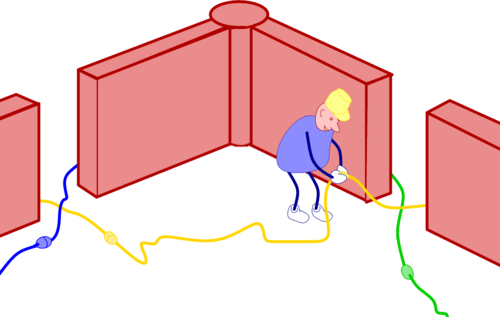
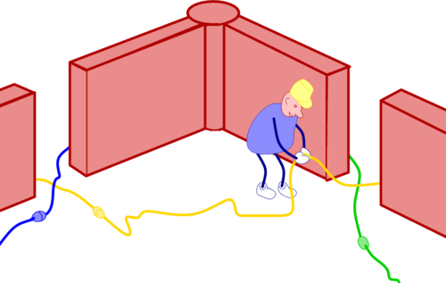
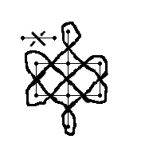
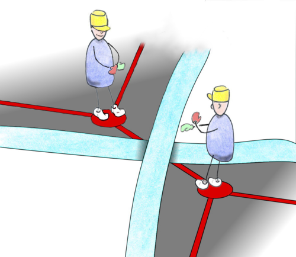

Un graphe est composé de sommets reliés par des arêtes. Il est planaire quand il peut être dessiné sur une feuille de papier sans que les arêtes se croisent.
Chaque graphe planaire code un nœud (un entrelacs). Par exemple, le nœud de trèfle est codé par un triangle :

Les graphes sont très faciles à faire. Une large classe de graphes est même appelée "dessins d’enfants" par les mathématiciens. Voici un graphe. L’entrelacs associé a été choisi comme symbole de bon augure dans le bouddhisme.

La procédure pour construire le nœud qu’il code se passe en quatre temps :

- Mettre un croisement sur le milieu de chaque arête.
- Connecter les petits bouts entre eux.
- Faire ressortir les dessus/dessous.
- Élargir le motif.
Voici un autre exemple :

 Mais revenons pas à pas à notre symbole bouddhiste. Premièrement, mettons un croisement au milieu de chaque arête :
Mais revenons pas à pas à notre symbole bouddhiste. Premièrement, mettons un croisement au milieu de chaque arête :
Il est important de bien dessiner les croisements de manière à ce qu’il n’y ait aucune ambigüité quant à la direction dans laquelle pointe un bout. En particulier, ne vous contentez pas de mettre un petit trait au milieu de l’arête, ou bien seulement un des deux traits, faites bien figurer le croisement en entier. Chaque brin doit être incliné par rapport à l’arête : ni trop à plat, ni trop droit, entre 30 et 60°.

 Il faut maintenant connecter les petits bouts qui dépassent entre eux. Pour cela, pensez à votre graphe comme à un labyrinthe, où chaque arête est un mur, percé d’une porte en son milieu. En travers de la porte se trouve le croisement.
Il faut maintenant connecter les petits bouts qui dépassent entre eux. Pour cela, pensez à votre graphe comme à un labyrinthe, où chaque arête est un mur, percé d’une porte en son milieu. En travers de la porte se trouve le croisement.
 Choisissez un des bouts, il pointe dans une direction, suivez le mur dans cette direction, tournez le coin, suivez le mur, jusqu’à ce que vous aboutissiez à une autre porte, un autre croisement, et parmi les liens à terre, un en particulier pointe vers vous, c’est à celui-là qu’il faut se raccorder.

Choisissez un des bouts, il pointe dans une direction, suivez le mur dans cette direction, tournez le coin, suivez le mur, jusqu’à ce que vous aboutissiez à une autre porte, un autre croisement, et parmi les liens à terre, un en particulier pointe vers vous, c’est à celui-là qu’il faut se raccorder.

Faîtes attention de ne pas essayer de sauter les étapes et de tenter de deviner trop rapidement où un brin va vous conduire. Soyez bêtes et discipliné(e)s, appliquez la méthode à la lettre. S’il y a un croisement qui n’est pas au milieu d’une arête, il y a un problème. Si un fil traverse un mur, il y a un problème : il faut passer par la porte, comme les gens civilisés. Ne créez pas de nouveaux brins aux croisements, utilisez ceux qui sont déjà là. Connectez-vous au premier brin qui se présente à vous le long du mur, pas le second ni le troisième : le premier. Une fois ce stade passé, il faut lisser le trajet de chaque brin.
Troisièmement, il faut décider à chaque croisement des dessus/dessous. Vous pourriez choisir au hasard le premier et suivre le brin alternativement au dessus/en dessous. Celà peut marcher pour des motifs de petite taille, mais dès que vous vous lancerez dans de grandes compositions, vous verrez que c’est intenable et qu’on finit toujours par avoir une moitié du dessin qui entre en conflit avec une autre moitié.
Heureusement, il y a une méthode sûre et sans danger :
 Recopiez le petit guide ci-contre dans un coin de votre feuille et déchirez le. Choisissez une arête de votre dessin et tournez votre petit guide de manière à aligner les deux arêtes. Le guide vous indique quel brin est au dessus et lequel est en dessous. Faites celà pour toutes les arêtes.
Recopiez le petit guide ci-contre dans un coin de votre feuille et déchirez le. Choisissez une arête de votre dessin et tournez votre petit guide de manière à aligner les deux arêtes. Le guide vous indique quel brin est au dessus et lequel est en dessous. Faites celà pour toutes les arêtes.
Une autre façon de voir les choses est d’aligner l’arête avec sa vue, de s’imaginer debout sur un sommet, en train de regarder le croisement. Des deux brins qui se croisent, un provient de votre droite, l’autre de votre gauche. Imaginez vous les prendre en main et croisez vos bras, le gauche (par exemple) passant au-dessus du droit. 
La dernière étape consiste à épaissir l’entrelacs. Pensez aux brins que vous avez construit comme étant la ligne blanche au milieu d’une route et les croisements comme étant des ponts. Commencez par construire les ponts de manière à savoir où commencer et où s’arrêter puis tracez le côté droit et le côté gauche de la route, d’un pont au suivant.
Maintenant, vous êtes prêt(e) pour quelques exercices.
{kind=link}